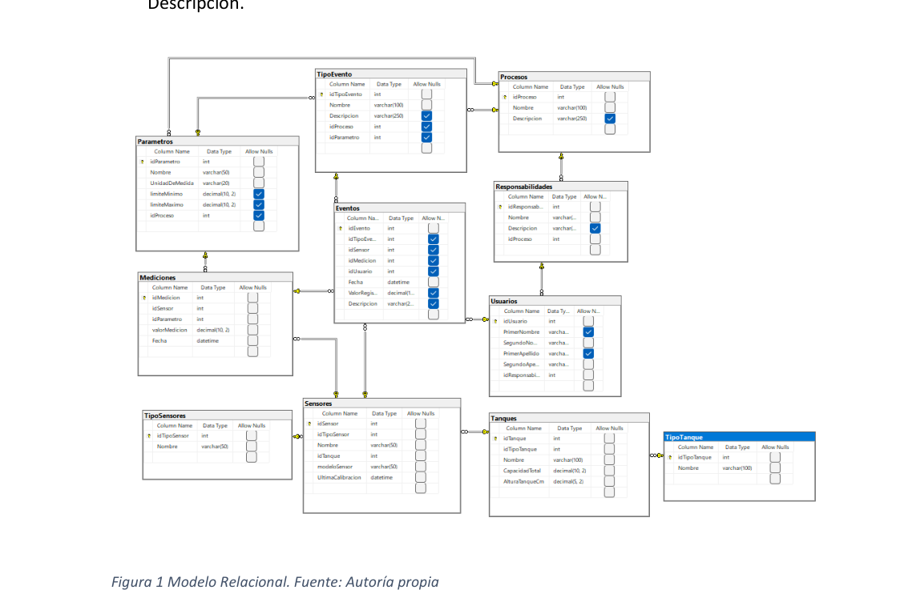
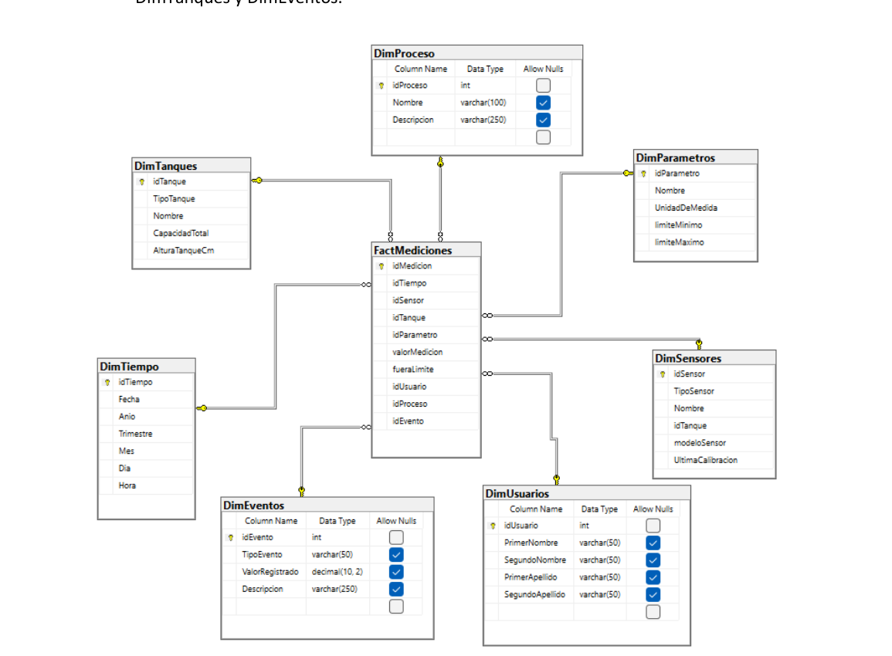
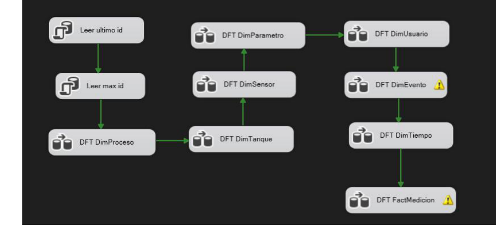

09 / Productos y evidencia
Productos y resultados
Se distinguen componentes demostrables mediante los archivos entregados y elementos que requieren evidencia o cifras adicionales.
Productos contrastados
| Producto | Evidencia disponible | Estado |
|---|---|---|
| Modelo relacional (11 tablas) | Diagrama MER y diccionario del documento técnico. | Documentado |
| Esquema estrella (1 fact, 7 dimensiones) | Diagrama y descripción del Data Warehouse. | Documentado |
| Simulación de un millón de mediciones | Script y comprobación descritos en MER_ELT_DW.pdf. | Documentado en origen |
| ETL incremental SSIS | Package.dtsx inspeccionado: 10 tareas principales, transformaciones y destinos. | Archivo presente |
| Dashboard de 4 páginas | Definiciones JSON y referencias a medidas/visuales en PBIX. | Archivo presente |
| Fotografías de la maqueta | [IMAGEN: maqueta_desarrollo] y [IMAGEN: maqueta_final]. | Pendiente de adjuntar |
| Cinco conocimientos validados | Cuadros metodológicos; faltan resultados por grupo exportados. | Pendiente de validación |
| Sitio publicado en Render | Proyecto HTML/CSS/JS preparado con render.yaml. | No publicado por instrucción |
Evidencia visual



[IMAGEN: maqueta_final]
Fotografía final por suministrar
Fotografía final por suministrar
Verificación necesaria
Los diagramas y archivos de proyecto permiten acreditar el diseño y la preparación del sitio, pero no sustituyen ejecutar la carga en SQL Server, exportar los datos por grupo, contrastar los resultados con Power BI y probar que los filtros funcionan bajo las credenciales del docente.
Evidencia de publicación: [COMPLETAR: URL final de Render y capturas de la página pública]. Se deja pendiente deliberadamente: esta fase no autoriza despliegue.